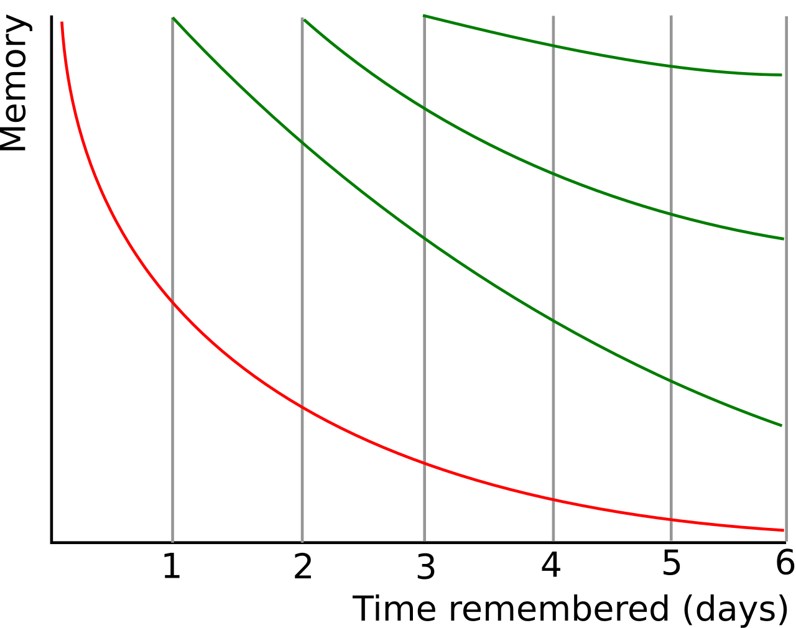
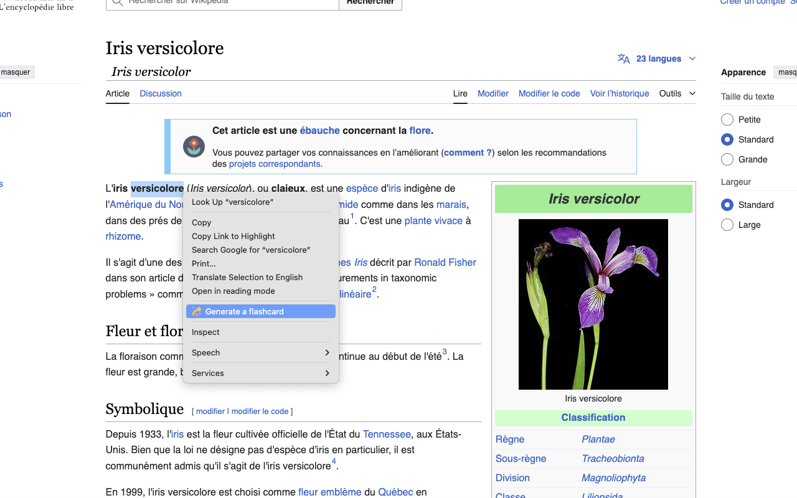
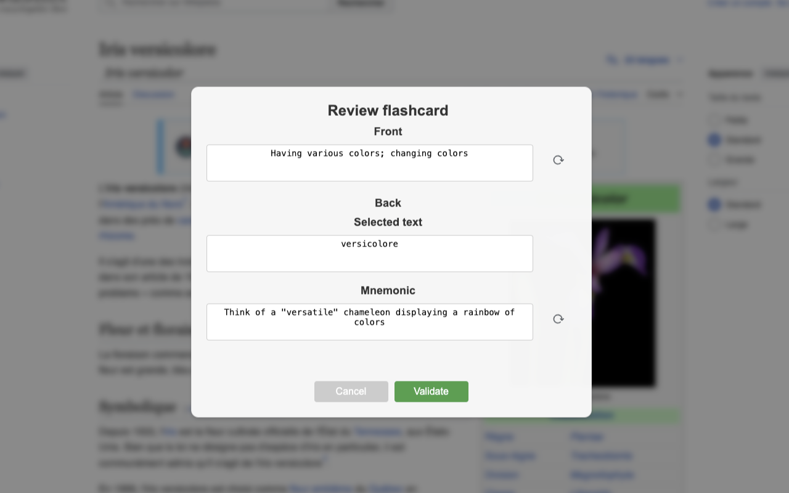

üöÄ Behersk et Nyt Sprog p√• M√•neder, Ikke √Ör: Brug AnkiLingoFlash til Hurtigt at Opbygge et Solidt Ordforr√•d
üìö Indholdsfortegnelse
- Introduktion: Fordelene ved Sprogindlæring
- Vigtigheden og Udfordringen ved Tilegnelse af Ordforråd
- Den Hemmelige Ingrediens: Spaced Repetition og AI-genererede Flashcards
üåç Introduktion: Fordelene ved Sprogindl√¶ring
At lære et nyt sprog er mere end bare en hobby - det er en port til utallige muligheder. Det kan markant forbedre dine karrieremuligheder ved at give dig mulighed for at kommunikere med et globalt publikum og få adgang til internationale jobmarkeder. Ud over de professionelle fordele beriger det dit personlige liv ved at muliggøre dybere forbindelser med mennesker fra forskellige kulturer og udvide dit verdenssyn.
üéØ Vigtigheden og Udfordringen ved Tilegnelse af Ordforr√•d
üí° Vigtigheden af Tilegnelse af Ordforr√•d
Mens sprogindlæring omfatter forskellige aspekter som grammatik, udtale og kulturel forståelse, danner ordforrådet grundlaget for kommunikation. Uden ord er selv den mest perfekte grammatik ubrugelig. Forskning viser, at beherskelse af de 3000-5000 mest hyppige ordfamilier i et sprog giver dig mulighed for at forstå 95-98% af de fleste almindelige tekster. Denne indsigt giver os mulighed for effektivt at fokusere vores indsats på at tilegne os essentielt ordforråd.
üö£ Udfordringen ved Tilegnelse af Ordforr√•d
På trods af den klare vigtighed af ordforråd forbliver effektiv tilegnelse en betydelig udfordring. Traditionelle tilgange anvender ofte en one-size-fits-all strategi, som ikke adresserer de unikke behov, interesser og læringstempo for individuelle elever.
Personalisering er afgørende, men ofte overset. Mens en læge måske har behov for at prioritere medicinsk terminologi, kræver en rejseguide rejserelateret ordforråd. Standard læringsmaterialer tager sjældent højde for disse specifikke behov, hvilket resulterer i ineffektiv læring og nedsat motivation.
Desuden undlader de fleste konventionelle læringsmetoder at udnytte kraftfulde kognitive teknikker, der drastisk kan accelerere tilegnelsen og fastholdelsen af ordforråd. Hukommelsesforbedrende strategier bør ikke være forbeholdt neuromarketing-eksperter; sprogindlæringstilgange kan og bør inkorporere disse tricks for at hjælpe nye ord med virkelig at sidde fast i elevernes sind.
Disse udfordringer kræver en innovativ tilgang til ordforrådsindlæring - en der personaliserer indhold, tilpasser sig individuelle læringshastigheder og udnytter effektive hukommelsesteknikker. Løsningen ligger i at kombinere velafprøvede læringsprincipper med moderne teknologi, som vi vil udforske i de følgende afsnit.
üçØ Den Hemmelige Ingrediens: Spaced Repetition og AI-genererede Flashcards
üìà Forst√•else af Gennemgangsprocessen
Gennemgangsprocessen spiller en kritisk rolle i at konsolidere viden i langtidshukommelsen. Jo mere vi gennemgår en information, jo dybere bliver den indlejret i vores hukommelse.

Med hver gennemgangssession forlænges fastholdelsesperioden for den memorerede information. Kilde: Wikipedia
{kind=link}
Følgelig er det for optimal læring - i form af effektiv tidsbrug - essentielt, at gentagelserne bliver stadig mere spredt over tid.
Det er dog vigtigt at bemærke, at intervallet mellem gennemgange kan variere fra person til person og fra koncept til koncept. Faktorer som materialets kompleksitet og individuel præstation under gennemgange spiller en betydelig rolle i denne variation. Det er her, Anki træder ind med en algoritmisk, adaptiv tilgang.
üñ•Ô∏è Anki: Et Flashcard-program, der Udnytter Spaced Repetition
Anki er et kraftfuldt værktøj, der udnytter teorien om spaced repetition til at optimere vores læring. I kernen bruger Anki flashcards - simple men effektive læringsværktøjer med et spørgsmål på den ene side og svaret på den anden.
Det, der adskiller Anki, er dets sofistikerede tilgang til at planlægge disse flashcards. Ved hjælp af avancerede algoritmer beregner Anki den optimale dato for gennemgang af hvert kort baseret på din tidligere præstation. Når du svarer korrekt på et kort, forlænger Anki intervallet før din næste gennemgang af det kort. Omvendt, hvis du laver en fejl, forkorter applikationen intervallet. Over tid fører denne metodik til stadig mere spredte gennemgange for hvert memoreret element, hvilket fremmer effektiv og varig videnskonsolidering. Gennem Anki kan du således fokusere på de elementer, der kræver mest opmærksomhed, hvilket gør din læring ikke kun mere effektiv, men også mere målrettet.
ü§ñ AnkiLingoFlash: Et V√¶rkt√∏j til at Automatisere Flashcard-oprettelsesprocessen
At oprette disse flashcards manuelt kan dog være en tidskrævende og ofte kedelig proces.
Det er her, AnkiLingoFlash træder ind for at lette din læringsproces. Som en browser-udvidelse integrerer den sømløst med din webbrowsing-oplevelse. Vælg simpelthen et hvilket som helst ord eller frase, du støder på online, og AnkiLingoFlash udnytter kunstig intelligens til øjeblikkeligt at generere flashcards af høj kvalitet.
üõ† AnkiLingoFlash Arbejdsgang
Sådan fungerer AnkiLingoFlash i praksis:
üñ± Ordvalg

Vælg tekst og højreklik: Fremhæv et ord eller en frase, højreklik, og vælg muligheden for at generere et flashcard.
üìù Kortgenerering

Gennemgå flashcardet: Tjek den AI-genererede definition og mnemotekniske hjælpemiddel. Anmod om en ny generering eller rediger manuelt, hvis det er nødvendigt.
✅ Sprogbekræftelse

Vælg dækket: Vælg det Anki-dæk, du vil tilføje dit nye flashcard til, og du er færdig! Definer også sproget for det valgte ord, hvis den automatiske detektion fejler.
üìö Gennemgang i Anki
Gennemgang i Anki: Efter at have oprettet dine flashcards, gennemgå dem i Anki og brug udtalehjælpen så mange gange, du har brug for.
Disse er ikke bare simple ord-definition par. Hvert flashcard er omhyggeligt struktureret for at optimere indlæringen:
Forsiden af kortet (spørgsmålssiden):
- En klar, præcis definition af termen
Bagsiden af kortet (svarsiden):
- Den valgte term og dens direkte oversættelse på dit foretrukne sprog
- En lydudtalevejledning for termen
- En AI-genereret mnemoteknisk hjælp til bedre fastholdelse
Ved at automatisere kortoprettelsesprocessen giver AnkiLingoFlash dig mulighed for at fokusere på det, der virkelig betyder noget - at lære og fastholde nyt ordforråd. Dette fokus på ordforrådserhvervelse er afgørende i sprogindlæring, da det danner grundlaget for flydende tale og effektiv kommunikation.
üèÜ Hurtige Fremskridt med AnkiLingoFlash og Anki
For eksempel kræver det at nå et B2-niveau - der betragtes som flydende til de fleste praktiske formål - typisk kendskab til omkring 4.000 ord. Med AnkiLingoFlash kan du nå denne milepæl på mindre end 9 måneder ved at dedikere blot 20 minutter om dagen til at lære 15 nye ord og gennemgå eksisterende ord. Denne fokuserede tilgang hjælper dig med hurtigt at opbygge et solidt fundament og baner vejen for sikker kommunikation på dit målsprog.
Det forvandler din daglige browsing til en ubesværet sprogindlæringsmulighed og gør rejsen mod flydende tale ikke bare hurtigere, men også mere fornøjelig og integreret i din dagligdag.
For mere information om understøttede sprog og priser, se venligst afsnittene Understøttede Sprog og Priser på hjemmesiden. For installationsvejledning, se venligst Installationsguiden.